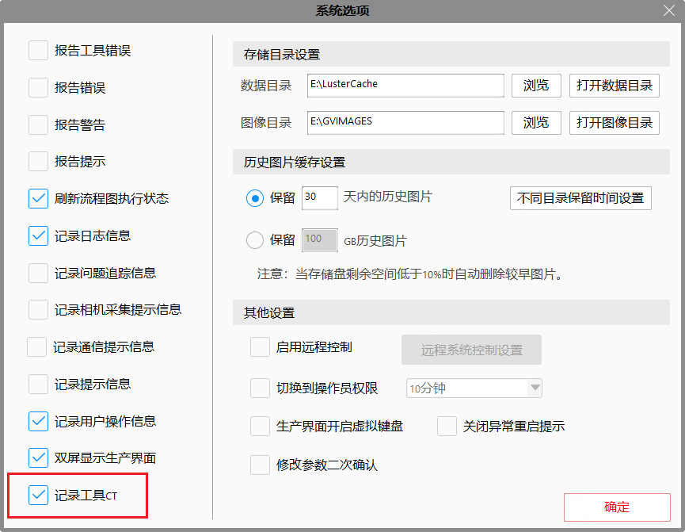
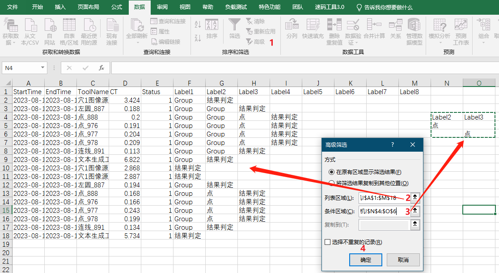
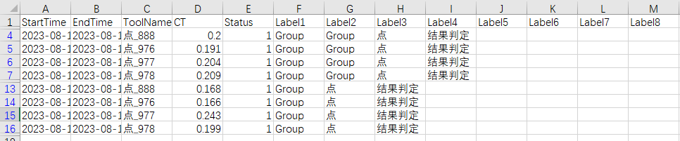

当前VA统计工具耗时或者某个流程耗时时依赖放置的计时开始和计时结束工具，在配合数据收集工具或者其他的收集方法得到一段时间的耗时波动，这无形之中增加了工作量，也使工程变得复杂；整个工程运行过程中某个工具耗时偶尔会出现波动，需要记录异常情况，后面方便追踪问题。
首先在系统选项中勾选”记录工具CT“选项，然后运行工程，在”LusterCache\CTLog"文件夹下保存了运行过程中工具执行的开始时间，结束时间，工具的名字，工具的CT，执行状态，和工具所属组合名称信息。

| 数据名称 | 解释说明 |
|---|---|
| StartTime | 工具开始运行时间 |
| EndTime | 工具执行结束时间 |
| ToolName | 工具名称 |
| CT | 工具耗时（EndTime-StartTime) |
| Status | 工具执行结果（1为Ok，0为NG） |
| Label1 | 工具所属组合名称（最里边组合定义为Label1，以下以此类推） |
| Label2 | 工具所属组合名称 |
| Label3 | 工具所属组合名称 |
| Label4 | 工具所属组合名称 |
| Label5 | 工具所属组合名称 |
| Label6 | 工具所属组合名称 |
| Label7 | 工具所属组合名称 |
| Label8 | 工具所属组合名称 |
打开记录表后可以用excel的筛选功能查看某一个工具耗时波动情况，也可以通过筛选标签简单计算某个组合所占用时间。在统计组合占用时间时，存在同一个组合不在同一列的情况，此时需要用到excel中高级筛选功能，筛选出不同列。首先在数据选项卡中点击高级，在弹出的对话框中列表区域选择数据条件区域选择条件数据（本例是想筛选出点组合的所有数据），点击确定即可筛选出所需数据


1.在记录时请勿打开记录文件，否则会造成记录失败的情况。
2.如果没有记录数据，请检查系统选项中“记录工具CT"是否为勾选状态。
3.同一个工程的组合的名称不要重复，否则会记录相同名称组合，造成筛选困难。
4.不记录表达式耗时。
5.工具嵌套组合不高于8个，否则无法记录最外层组合。